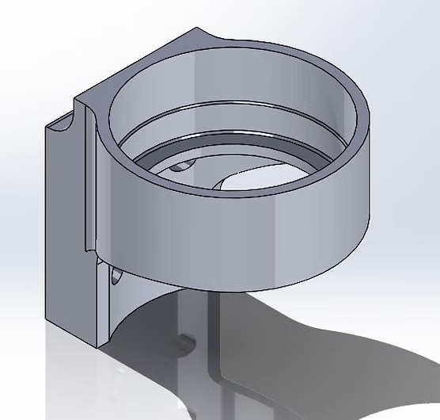
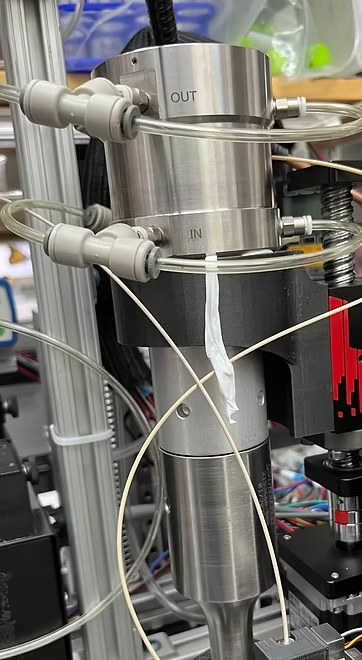
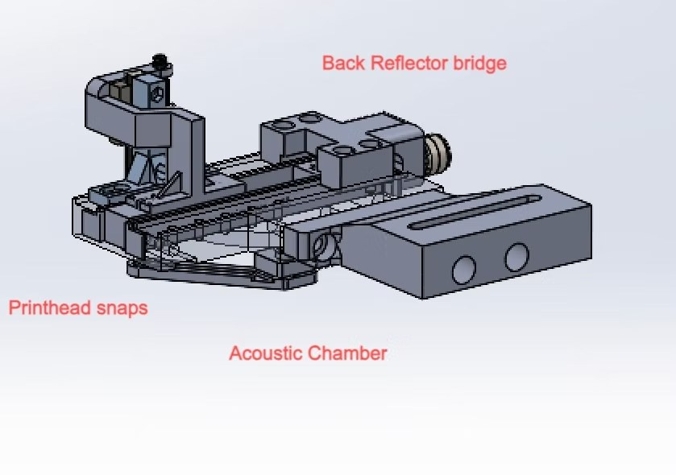
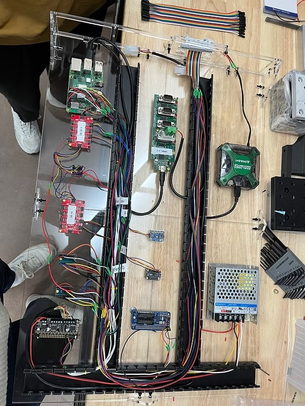
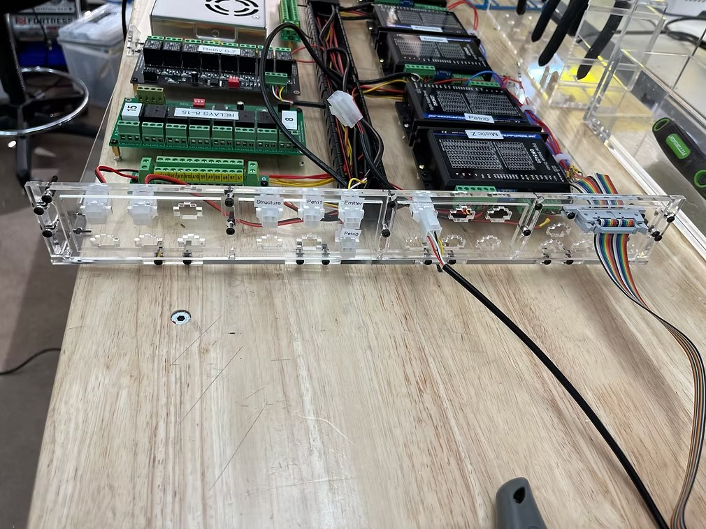

AcousticaBio · Jan 2023 – Aug 2023
Mechanical Design, SolidWorks & Rapid Prototyping
SolidWorks & Rapid Prototyping
Problem
AcousticaBio purchased a new transducer with larger dimensions and greater weight than the previous model. The existing mount could not accommodate these changes and needed to be redesigned.
Action
First I drafted a design in SolidWorks, then adjusted it to accommodate space constraints, ease of setup, and the weight of the transducer. I 3D printed an initial version, identified necessary changes, made adjustments in a subsequent iteration, and finally reprinted and implemented the piece on the printer.
Outcome
A sturdy 3D printed mount that supports the transducer, prevents deformation over time, and allows for easy setup.

A SolidWorks rendering of the transducer mount.

An image of the transducer on the printer in the mount.
Mechanical Design & SolidWorks
Problem
The new transducer emitted sound waves at a different frequency than the previous one, requiring adjustments to the printhead parameters that channel the acoustic field.
Action
Designed, built, and implemented a back reflector bridge holding a motor that could be controlled from the desktop system, replacing the previous manual adjustment. The bridge also acted as a structural brace for the acoustic chamber.
Adjusted the acoustic chamber geometry for the new transducer, calculating dimensions using equations from a published paper based on wavelength and frequency.
Designed, printed, and implemented snap-fit printhead components so transducers could be swapped without disassembling the entire printhead — saving significant time during testing.
Outcome
The new printhead design produced an acoustophoretic force of approximately 250g — a 25% improvement over the previous version. The automated back reflector also made the printer significantly easier to operate.

Updated acoustophoretic printhead design.
Laser Cutting & Design
Problem
The second iteration of the printer required a new electronics configuration. The existing acrylic panel design no longer fit the updated components.
Action
Designed acrylic panels to be laser cut and fit all of the necessary components.
Outcome
Three functional shelves of electronics, neatly spaced and organized on the electronics and hardware cart, keeping all components labeled and easy to identify.

Laser cut acrylic with some electronics before being implemented on the cart.

Laser cut acrylic front panels with labels before being placed on cart.